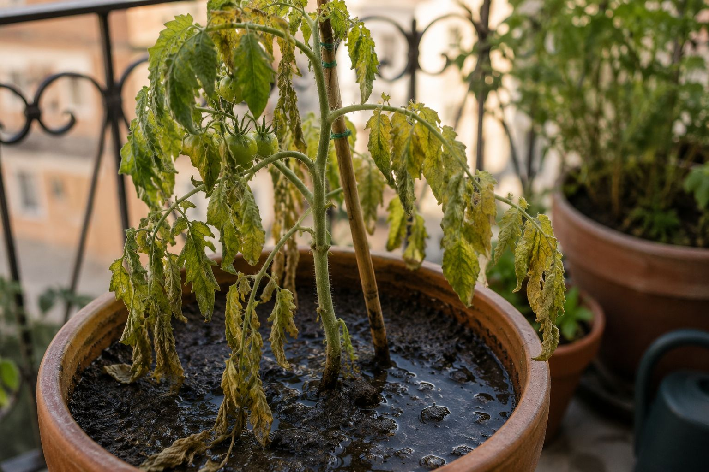

Si tu planta se ha muerto alguna vez sin que sepas muy bien por qué, no eres tú "el que no tiene mano con las plantas" — casi seguro es uno de estos errores, que se repiten una y otra vez porque nadie te los explica claramente antes de empezar.
1. Regar de más "por si acaso"
Es, con diferencia, el error más común y el que más plantas mata. El miedo a que se seque lleva a regar todos los días sin comprobar si hace falta. El resultado es el contrario al que buscas: la raíz se queda sin oxígeno y se pudre, y la planta muere por dentro aunque por fuera parezca sana.
La solución: comprueba el sustrato antes de regar (mete el dedo 2 cm), y usa una cantidad calculada para tu planta y tu maceta, no "un poco todos los días". Lo explicamos con detalle en nuestro artículo de cuánta agua necesita realmente una maceta.
2. Usar tierra de jardín en vez de sustrato
La tierra normal del jardín o del parque se compacta en una maceta, no drena bien, y puede traer patógenos o semillas de malas hierbas. Hace falta un sustrato pensado específicamente para maceta.
La solución: usa siempre un sustrato universal con perlita o uno específico según la planta (las ácidas como el arándano necesitan uno propio). Tienes la guía completa en qué sustrato necesita cada planta.
3. Amontonar demasiadas plantas en la misma maceta
Es tentador aprovechar el espacio metiendo un tomate, unas lechugas y unos rábanos en la misma jardinera. El resultado casi siempre es que todas compiten por el mismo agua y los mismos nutrientes, y ninguna crece bien.
La solución: calcula el volumen real que necesita cada planta antes de plantarla, no solo la superficie. Puedes verlo en detalle en cuántas plantas caben en una maceta.
4. Elegir una maceta demasiado pequeña
Una maceta pequeña se seca mucho más rápido de lo que parece (hasta un 30-50% más rápido que una planta en tierra, en proporción), y limita cuánto puede crecer la raíz. Muchas hortalizas de fruto (tomate, pimiento, berenjena) necesitan mínimo 15-20 litros para desarrollarse bien.
La solución: comprueba el tamaño mínimo recomendado antes de comprar la maceta, no después.
5. Juntar plantas que no se llevan bien
No todas las plantas combinan bien entre ellas: algunas comparten plagas o compiten fuerte por los mismos nutrientes al ser de la misma familia (por ejemplo, tomate y patata). Otras, como la menta, son directamente invasoras y se comen el espacio de las demás.
La solución: antes de plantar dos cosas juntas, comprueba la compatibilidad real, no vayas a ciegas.
6. Sembrar en el mes equivocado para tu zona
Un calendario de siembra genérico de internet puede decirte "siembra tomates en marzo", pero eso vale para una media de toda España, no para tu pueblo concreto. El clima cambia mucho entre la costa y el interior, entre el norte y el sur.
La solución: usa un calendario que tenga en cuenta tu zona climática real, no una media nacional.
7. Esperar resultados demasiado rápido
Este es más de mentalidad que de técnica: algunas plantas (limonero, arándano, laurel) tardan años en dar su primera cosecha completa, y quitar las flores el primer año a propósito (para que la planta se haga fuerte) suele dar mejor resultado a medio plazo que dejarla producir de inmediato. La paciencia, aquí, es parte de la técnica.
🌱 El patrón detrás de todos estos errores: casi siempre es hacer "de más" pensando que así se ayuda a la planta — más agua, más plantas, más prisa. La mayoría de las veces, la planta necesita menos intervención y más precisión, no más esfuerzo.
Evita estos errores con las herramientas correctas
Cada uno de estos errores tiene una herramienta gratuita que te ayuda a no cometerlo:
← Volver a Consejos | Ver también: Guía de siembra para principiantes · Qué necesitas para empezar a plantar en casa